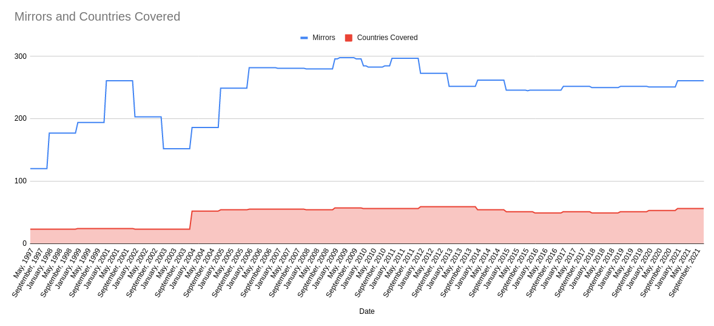

The ASF system download mirrors evolved organically, and then systematically, over 25 years. It depended on many hours of labor by volunteers and generous contributions by organizations that supported the concept of free and open source software, and made possible distribution of Apache projects' software around the world.
In 2021 The ASF moved to a content distribution network (CDN), retiring the download mirror system. Here is its story.
As soon as the Apache Group, the precursor to the ASF, had a useful version of the Apache Server, it wanted to share it widely. This required having a download site from which interested parties could retrieve the latest version of the software.
A single download site could handle a few requests at a time, but as demand expanded rapidly, the volume of download requests became more than a single site could handle. In addition, the further away the request came from, the longer the download would take, and the possibility of losing connections and therefore having to start over became greater. As requests were soon coming in from all around the world, this became a serious challenge. Apache needed download mirrors to help handle the load.
A download mirror site is, as the name implies, a copy of the main download site. Several times a day a mirror checks the main site to see if there are new or updated artifacts to add to its offerings. A mirror would sometimes be as much as 24 hours out of sync with the main site, but most of the time was able to offer everything the main site did. Requestors who were physically nearer to the mirror than to the main site could download software much more quickly from their local mirror.
Mirrors require lots of memory, visibility on the Internet, bandwidth, maintenance, and power. Apache relied on organizations to contribute these things by sponsoring mirror sites. The first mirror sites became available in April, 1995. Among the first mirror providers was SunSite, 'a network of Internet servers providing archives of information, software and other publicly available resources.'
In April,1997, Brian Behlendorf sent an email to 66 recipients who were hosting Apache mirrors to invite them to the 'mirror@' Apache mailing list. The email noted "a varying degree of quality amongst mirror sites, so I wanted to start a forum for discussion of how to improve that quality, and how to look forward to better mirroring protocols than FTP."
In June of that year, Brian wrote to the group, "The release of 1.2.0 (of the Apache server) caused an unprecedented amount of traffic on our site; so much so that the bandwidth provider for www.apache.org has begun to grumble. To address this, we have taken some measures to bolster the effectiveness of the site in supporting mirrors." Among the changes: "The 'Download' link has been turned into a CGI script which selects from the list of mirrors those most appropriate for your domain, based upon the country-code of the requesting agent." Brian, Joshua Slive, and Eric Abele were the primary system maintainers.
In 2000, the system moved from CGI to a MySQL database. However, many things stopped working within a couple of weeks. The system quickly moved back to CGI.
In 2002, Henk P. Penning, who would make major contributions to the mirroring system and to many other aspects of Apache, appeared in the mailing list for the first time. That year, a download mirror had to allocate 10 gigabytes of space to handle all the artifacts available for download. At the time, that seemed huge!
In 2003, Henk started generating statistics about the mirror network, providing a way for mirror hosts to check the health of their system and their connection to Apache. In December of that year, backup (fallback) sites joined the system. Henk, now a member of the Infrastructure team, formalized monitoring of Apache mirrors.
From 2004 to 2015 the mirror system enjoyed steady growth, responding to world-wide demand for access to Apache projects' software.
In 2007 Gavin McDonald (gmcdonald) joined the Infrastructure team. His first focus was going through the huge backlog of tickets, many of which were requests for mirror providers to join as official mirrors.
Back then, managing the mirrors was a manual task, including going to each prospective provider's mirror site and performing checks (are they up to date, syncing at least twice a day, using the Apache Web Server to serve the mirrored software, etc.). For the many existing official mirrors, Gavin performed periodic checks and wrote emails to remind a mirror provider of their duty if the mirror had become stale. A few months in, Gavin requested Henk to create a nag checker tool that would detect stale mirrors and automatically email the provider. That was a big time saver!
Gavin continued maintaining the mirror system for another couple of years, before other volunteers relieved him. Eventually the Infra team took over the role.
In August 2015, deploying the mod_lua based system significantly improved response times.
By 2021, a download mirror had to allocate at least 180 gigabytes of space for all Apache projects available for download.
When the download-mirror system started, the bandwidth to support downloads was very expensive. Mirror sites, as well as providing faster download times for requestors near them, also helped share the bandwidth costs. Over the years, more than a thousand organizations hosted ASF download-mirror sites, some for long periods. This contribution was enormously important to the mission of The ASF, and to the world of open source software in general.
Technology has advanced and bandwidth costs have dropped. The time has come to move The ASF's download distribution to a service that has professional support, to better suit the position the foundation and its projects have in today's world. The ASF is a major player in the open source technology sector, and our download options should support and reflect that status.
In the third quarter of 2021, the time was right to move to the new CDN.
The new CDN is a global content delivery network operated by one of the leading actors in the business. It provides
Projects should not experience any change to their workflow. They eventually will need to remove guidance about selecting a download mirror from their sites. They will gain insights about who is downloading (and presumably using) their software, as noted above.
Users should experience faster, more reliable downloads, and access to downloadable software versions as soon as they become available, without having to wait for mirror sites to catch up to the main ASF download site.
Any organization that has been hosting an Apache download mirror site, and that finds it useful for its own purposes, may continue to host the mirror site. Other organizations may want to consider how to redeploy resources that have been supporting their mirror site to helping the ASF and the open source software community in another way.
For example, The Apache Software Foundation is always looking to expand our CI capacity. Any providers wishing to donate computing resources (virtual machines or bare metal servers) are most welcome to contact the builds team at builds@apache.org to discuss how they can help improve our CI environment.